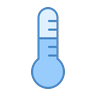
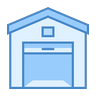
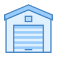

Humidity 48% 2 minutes agoYour Domoticz dashboard, redrawn.
Machinon replaces Domoticz's default interface with a clean, card-based layout: 8 color schemes in matching light and dark pairs, a library of over 250 device icons installed one at a time, and every theme setting on one page inside Domoticz.
Every color on this page is the theme's own. Change the scheme in the top right and watch.

Live, not a screenshot
Real Machinon cards
Built on the theme's own card grid, from the same design tokens it ships. Pick any scheme above and they repaint with the rest of the page. Flip the kitchen lights, drag the hallway dimmer, or open the garage door: every state change swaps in the icon library's real per-state artwork.


Contact closed 6 minutes ago
What you get
Built for a dashboard you actually look at
8 color schemes
Machinon, Gruvbox, Magenta and Paper, each with a light and a dark variant, so the whole interface follows your preference.
Every setting, one page
Every theme setting on one page inside Domoticz, reachable from the Setup menu once the theme is active.
Custom colors
Design your own palette in the Colors and schemes tab and save it as a preset, with contrast checked as you go.
250+ device icons
A line style and a colour style, plus playful extras, each with on and off states, installed individually per device from the Theme Hub. Request more on GitHub.
Mobile layouts
Dashboards, menus and dialogs adapt to small screens instead of just shrinking the desktop layout.
Card based
Devices sit in a responsive grid you can reorder by dragging, with card width under your control.
Settings that stick
Personal settings follow your own Domoticz login where the installation has separate accounts; shared settings apply to everyone. With one login shared by everyone, every change applies to everyone.
Fast to load
Releases ship as one flattened stylesheet, which matters most on slower connections and wall panels.
Eight schemes
Pick a palette
Every shipped scheme holds body text at WCAG AA or better. Click one to apply it to this page.
One settings page
The Theme Hub
Nine groups covering standby, menus, the dashboard, device cards, charts, background and branding, colors, icon packs, and an About tab with the theme's maintenance actions. Some rows carry a small live preview of what they change; many others open their own picker or apply directly instead.

Icons
One icon language, across every device
Machinon redraws the icons Domoticz ships, as one family: the same weight, the same corner treatment, the same way of showing an on state and an off state. Every one is drawn at double the size it is displayed at, so it stays sharp on phone screens and high-density displays.
Make any card instantly recognizable
Beyond the defaults, the icon pack holds over 250 icons you install onto individual devices from the Theme Hub, one at a time. Most come in a line style and a colour style, so a card can match the rest of the interface or stand out from it.
And a set of playful extras, for the devices that deserve one.
Missing one? Request it on GitHub.
Floorplans
The whole house at a glance
Domoticz floorplans, restyled to match: live device icons, readings and states drawn over your own plans. Click a device for its control popup; an optional theme setting makes that popup expandable, adding Log and Notifications shortcuts right on the plan.

Small screens
Made for the phone on the counter


Get started
Install in a minute
Needs Domoticz 2025.2 or newer, latest beta recommended.
-
Clone the dist branch
The leanest install: just the built theme, no source files.
Terminalcd domoticz/www/styles git clone -b dist --single-branch https://github.com/domoticz/Machinon.git machinon -
Select the theme
In Domoticz, open Setup > Settings > System and pick
machinonunder Theme. -
Click Apply Settings
The choice only persists once you do. No Domoticz restart is needed.
-
Hard-refresh your browser
Ctrl+Shift+R, so the browser picks up the new files instead of the cached old ones.
Update later with git pull inside the machinon folder.
Other ways to install
Release zip
Download machinon-<version>.zip and unzip it into domoticz/www/styles/. The zip already contains a machinon/ folder.
Theme Manager
The Theme Manager plugin can install Machinon for you. It installs the full source rather than the lean dist build, so the dist branch loads faster if you do not need the plugin otherwise.
Full source
For development. Loads around 27 separate CSS files instead of one flattened file, which is slower for everyday use.
Terminal
cd domoticz/www/styles
git clone https://github.com/domoticz/Machinon.git machinonUpgrading from 1.x? The repository history was rewritten for 2.0.0, so
git pull in an old clone will fail. Delete the old machinon folder
and reinstall. Nothing needs migrating: your settings live in Domoticz, not the theme folder.